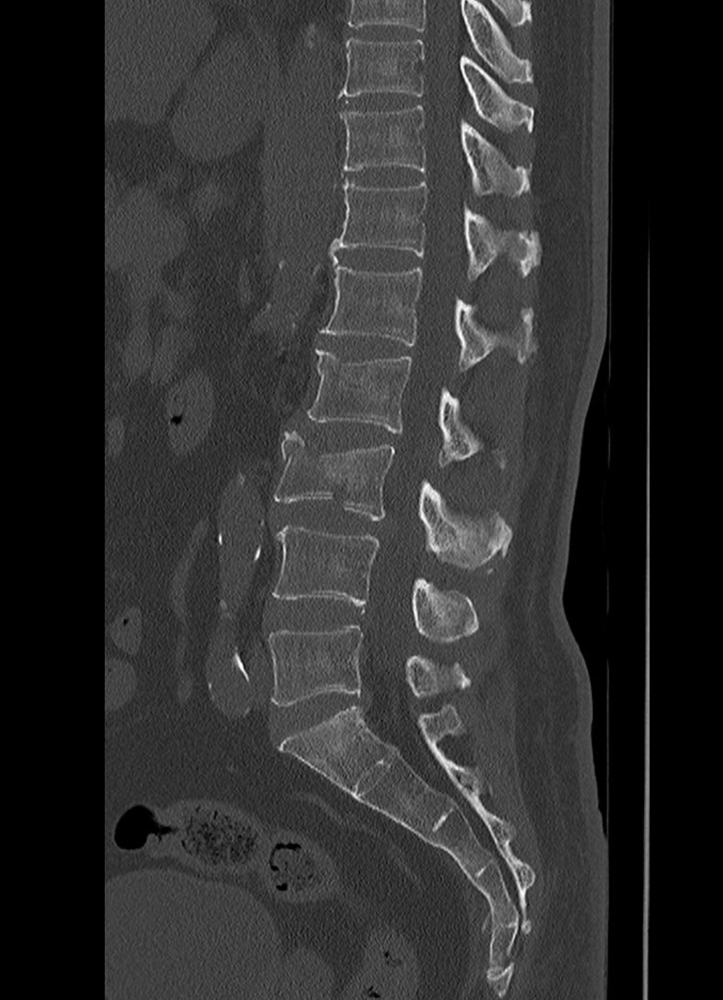
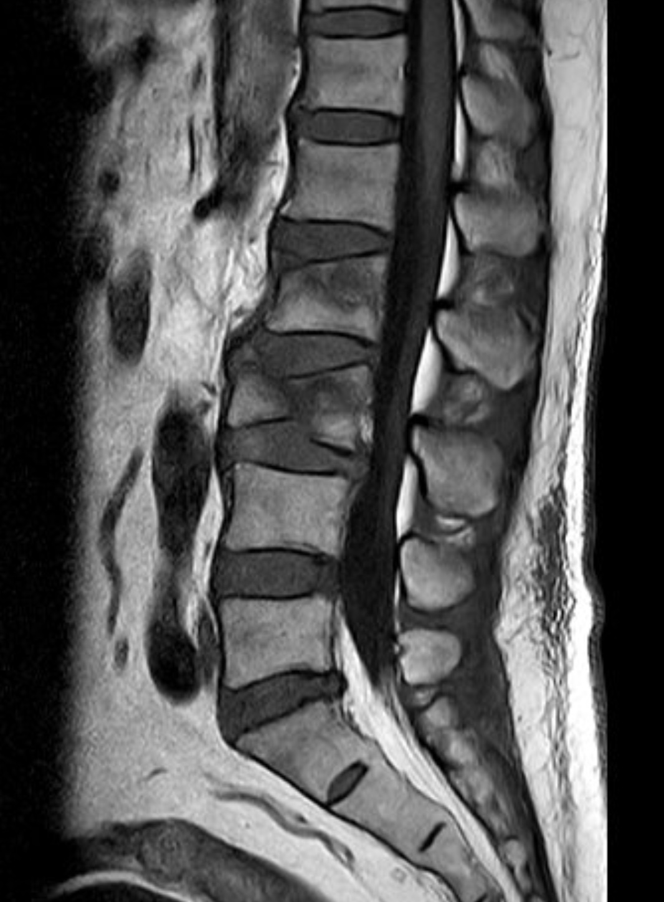
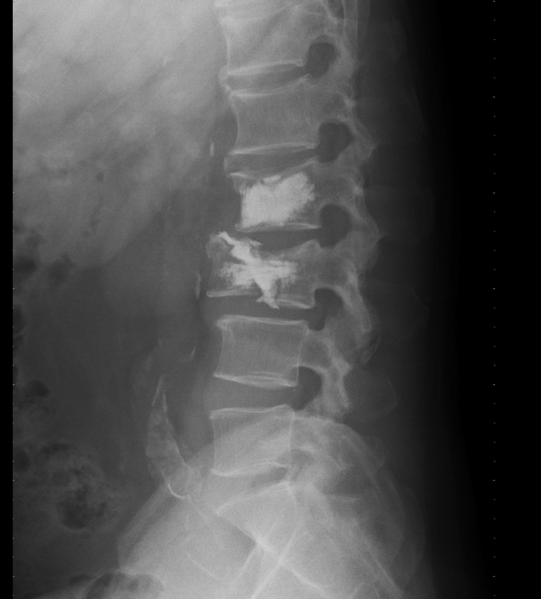
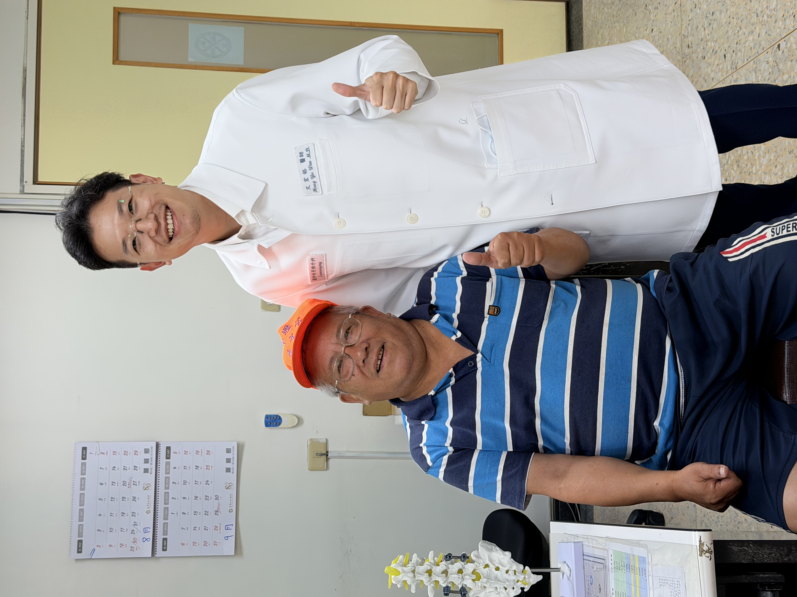

從兩米高處跌落，腰背劇痛到難以活動
63 歲的劉先生，因工作時不慎從約兩米高處跌落，落地後立即出現明顯腰背疼痛。
一開始，他以為可能只是撞傷或扭傷。
但疼痛程度相當劇烈，翻身、坐起、站立都變得非常困難，連簡單活動都受到明顯限制。
對仍需要工作與維持日常活動的劉先生來說，這次受傷不只是疼痛問題，更擔心會不會影響後續工作能力與生活安排。
高處跌落後出現劇烈腰背痛，不能只當作一般拉傷處理。尤其疼痛明顯影響翻身、起床或行走時，就需要進一步檢查是否有脊椎骨折、椎體塌陷或神經壓迫。
檢查發現：腰椎第一節、第二節壓迫性骨折，沒有壓迫神經
劉先生接受 CT 與 MRI 檢查後，確認為腰椎第一節與第二節壓迫性骨折。
影像檢查顯示，兩節椎體都有骨折與塌陷情形，但幸運的是，骨折並沒有造成明顯神經壓迫。
這一點非常重要。
如果脊椎骨折合併神經壓迫，可能會出現腳麻、腳無力、走路困難，甚至大小便控制異常，治療策略會更複雜，也可能需要更大範圍的神經減壓或固定手術。
劉先生的狀況屬於：
疼痛明顯、椎體骨折塌陷，但沒有神經壓迫。
因此治療重點在於：
穩定骨折椎體、減少骨折微動造成的疼痛，並協助他儘快恢復活動能力。


治療考量：兩節骨折，不一定使用同一種方式處理
脊椎壓迫性骨折的治療，不是每一節都用一模一樣的方法。
醫師會依照每一節椎體的塌陷程度、骨折型態、椎體高度、疼痛位置、神經安全性與患者生活需求，選擇最適合的處理方式。
經過完整影像判讀和劉先生討論後，決定針對兩節骨折分別處理：
- 腰椎第一節：氣球擴張椎體成形術
- 腰椎第二節：千斤頂椎體成形術
這樣的安排，是因為不同椎體的塌陷與支撐需求不同。
治療目的不是單純把骨水泥打進去，而是針對不同骨折型態，選擇最適合的椎體重建與穩定方式。
治療方式：氣球擴張與千斤頂椎體成形術
劉先生接受微創椎體成形治療。
在腰椎第一節，使用氣球擴張椎體成形術。手術會先將氣球放入塌陷椎體內，撐開並建立空間，再填入骨水泥，幫助穩定骨折椎體。
在腰椎第二節，則使用千斤頂椎體成形術。千斤頂的特色，是撐開後留下內部支撐結構，再搭配骨水泥固定，對於需要較多椎體高度恢復與支撐重建的骨折型態，可以提供更好的結構支撐。
簡單來說：
- 氣球，是先撐開，再填補。
- 千斤頂，是撐開後留下支撐，再加強穩定。
對劉先生來說，兩種方式搭配使用，是為了在微創傷口下，同時處理兩節不同型態的壓迫性骨折，穩定骨折結構，減少疼痛來源。

圖片說明：術後 X 光可見兩節腰椎椎體成形治療位置，協助穩定骨折椎體並重建支撐。
治療後變化：術後恢復良好，隔天順利出院
手術後，劉先生恢復情況良好。
原本因骨折造成的劇烈腰背疼痛明顯減輕，活動能力逐步改善。在醫療團隊評估後，劉先生於術後隔天順利出院。
對他來說，最重要的不只是疼痛改善，而是能夠儘快恢復基本活動，減少長時間臥床，也讓他有機會逐步回到原本的工作與生活節奏。
劉先生對治療結果感到非常滿意，也希望能在安全恢復後，盡快回到工作崗位。
當然，每位患者的恢復速度都不同，仍會受到骨折型態、受傷時間、骨質條件、是否合併其他脊椎疾病，以及術後活動保護與復健狀況影響。

文宏裕醫師的治療觀點
脊椎壓迫性骨折，不是只看影像上哪一節塌陷，也不是每一節都用同一種方式處理。
真正重要的是判斷：
- 骨折是不是新鮮的？
- 疼痛位置是否和影像相符？
- 椎體塌陷程度如何？
- 有沒有神經壓迫？
- 病人是否因疼痛無法翻身、起床或行走？
- 需要單純穩定骨折，還是需要同時重建椎體高度與支撐？
劉先生的案例提醒我們，高處跌落後若出現劇烈腰背痛，不應只是貼藥膏、吃止痛藥或忍耐觀察。
透過 CT 與 MRI 檢查，可以更清楚判斷骨折位置、新舊程度、塌陷狀況與神經安全性。
對適合的患者來說，微創骨水泥、氣球擴張椎體成形術或千斤頂椎體成形術，可以幫助穩定骨折椎體、減少疼痛，並讓患者有機會更早恢復活動。
治療不是只看影像，而是回到患者的疼痛、功能與生活需求。
手術不是目的，重新回到生活才是目的。
把時間留給生活，不留給疼痛。
案例提醒
本案例已去識別化處理，內容僅作為疾病與治療方式說明。
每位患者的骨折型態、疼痛程度、骨質條件、治療方式與恢復速度都不同，實際治療仍需經由門診或急診評估、理學檢查與影像判讀後，由醫師與患者共同討論決定。
若跌倒或外傷後出現劇烈腰背痛，或合併腳麻、腳無力、無法行走、大小便異常或會陰部麻木，請勿等待門診，應立即至急診評估。
手術不是目的，重新回到生活才是目的。
把時間留給生活，不留給疼痛。